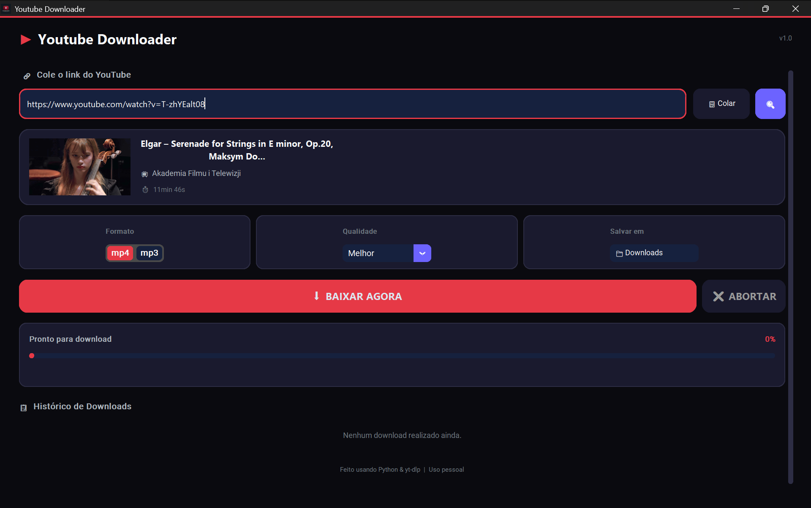

Inteligência Artificial em 2026
Ferramentas, Agentes e Estratégia para a Equipe
Estrutura da Apresentação
História da IA
Os principais marcos de 1950 até hoje.
O que é uma LLM
O cérebro por trás dos modelos.
A Virada de 2025
O novo paradigma da inteligência.
Agentes e Harness
Como a IA executa tarefas no mundo real.
Dicionário
Conceitos essenciais explicados.
Modelos de Fronteira
Quem lidera o mercado hoje.
Comparativo
Análise cruzada de IDEs e CLIs.
Projetos com IA
Casos reais desenvolvidos com Agentes.
Adoção da Equipe
Recomendações e plano de ação.
Uma Breve História da IA
Clique nos círculos para ver o impacto e a descrição detalhada de cada era da inteligência artificial.
Selecione um marco temporal acima para ver detalhes de desenvolvimento.
O Que é uma LLM (Large Language Model)?
A Analogia do Teclado
Pense no corretor ortográfico ou no autocomplete do seu smartphone que sugere a próxima palavra.
Uma LLM faz o mesmo: porém, ela foi treinada em centenas de bilhões de frases da internet, repositórios de código e livros, prevendo as sequências com um realismo impressionante.
Termos Críticos (Clique para virar)
A Virada de 2025: Inteligência Qualitativa
Foco principal no aumento maciço de dados e parâmetros. Retornos começaram a decair.
Modelos menores, altamente refinados e focados em raciocínio encadeado (CoT).
Agente = LLM + Harness
Clique nas camadas abaixo para ver a função de cada componente na arquitetura agêntica.
Dicionário de Termos Essenciais
LLM
ModelosHarness
ArquiteturaAgente de IA
ArquiteturaMCP
ProtocolosRAG
ArquiteturaBanco Vetorial
ArquiteturaChain-of-Thought
ModelosMAS (Multiagente)
ArquiteturaHITL
SegurançaModelos de Fronteira (Junho 2026)
| Modelo | Status | Observação Técnica |
|---|---|---|
| GPT-5.5 | Ativo | Flagship atual para Codex e ChatGPT. Excelente consistência e velocidade. |
| GPT-4.5 | Aposentado | Descontinuado em 27/Jun/2026. Substituído por completo pelo GPT-5.5. |
| o3 | Aposentando | Modelo com raciocínio matemático legado. Fim de vida em 26/Ago/2026. |
| GPT-5.6 Sol | Futuro | Lançamento planejado. Foco em raciocínio matemático avançado e lógica. |
| GPT-5.6 Terra | Futuro | Lançamento planejado. Otimizado para agentes de CLI e geração de código autônoma. |
| GPT-5.6 Luna | Futuro | Lançamento planejado. Modelo leve e rápido para autocomplete e pequenas edições inline. |
| Modelo | Status | Observação Técnica |
|---|---|---|
| Claude Sonnet 5 | Ativo | Lançado hoje (30/Jun/2026). Raciocínio adaptativo (adaptive thinking) nativo e 1M de tokens de contexto. |
| Claude Opus 4.8 | Ativo | Estabilidade SOTA para refatorações profundas e raciocínio multi-módulo. |
| Claude Sonnet 4.6 | Legado | Substituído hoje pelo Claude Sonnet 5 para fluxos de desenvolvimento diários. |
| Claude Haiku 4.5 | Ativo | Modelo extremamente leve e de resposta rápida para loops menores. |
| Claude Fable 5 | Suspenso | Acesso público suspenso em 12/Jun/2026 para correções estruturais. |
| Claude Mythos 5 | Restrito | Modelo sem travas de segurança (Glasswing). Restrito a parceiros governamentais. |
| Modelo | Status | Observação Técnica |
|---|---|---|
| Gemini 3.5 Flash | Ativo | Velocidade incomparável com janela de contexto de 1 Milhão de tokens (1.048.576 tokens) e suporte nativo a entrada multimodal. |
| Gemini 3.5 Pro | Preview | Modelo premium de alta computação em preview na Vertex AI. Lançamento geral adiado para Julho de 2026. |
| Gemini 3.1 (Flash / Pro) | Legado/Ativo | Modelos legados estáveis ainda amplamente integrados na API empresarial. |
| Gemma 4 (12B) | Ativo | Excelente modelo open-weight para rodar localmente no notebook dos desenvolvedores. |
Antigravity (Google DeepMind)
Plataforma Agêntica Unificada
A ferramenta oficial da Google DeepMind que une motor CLI, app visual e fork da IDE em uma única arquitetura sincronizada.
CLI (Terminal Go)
Alta performance compilada em Go. Substituiu por completo o Gemini CLI em 18/Jun/2026. Excelente para tarefas assíncronas.
APP (Desktop 2.0)
Painel completo para monitoramento multi-agente e tarefas agendadas em background. Integração nativa com ecossistema Firebase.
IDE (VS Code Fork)
Editor nativo com painéis integrados (Editor vs. Manager Surface) para codificação supervisionada e escrita assistida.
Codex (OpenAI)
Orquestração Visual de Metas
O Codex atua como coordenador multi-superfície, decompondo objetivos complexos de desenvolvimento em sub-metas rastreadas graficamente em um painel interativo (estilo checklist/Kanban). O usuário acompanha o progresso, execuções de testes e ganchos de aprovação em tempo real sem logs complexos.
CLI (Terminal)
Inicia tarefas complexas locais e as exporta para o painel visual. Executável local autônomo.
APP (Desktop & Web)
Central gráfica com deploys em tempo real e visualização de metas. Integra-se ao navegador.
Claude Code (Anthropic)
Poder Absoluto no Terminal
Um agente focado na CLI que lê arquivos, resolve conflitos git e interage via terminal usando o protocolo universal MCP.
CLI (Terminal) & APP
Mudança Crítica (15/Jun/2026)
O uso automatizado e sem supervisão (headless / CI/CD) foi removido da assinatura Pro. O faturamento desse tráfego agora é debitado via sistema de créditos por token em dólares.
Matriz Comparativa das Soluções
| Critério | Antigravity | Claude Code | Codex | Cursor | Windsurf |
|---|---|---|---|---|---|
| Interfaces | CLI + APP + IDE | CLI + APP | CLI + APP | IDE (VS Code Fork) | IDE (VS Code Fork) |
| Modelos | Gemini (Nativo) + Multi | Claude Nativo | GPT-5.5 Nativo | Multi-modelo | Multi-modelo |
| Contexto Máx. | 1M tokens | 1M tokens (Sonnet 5) | ~200K tokens | Variável (por modelo) | Variável (até 1M) |
| Multi-Agentes | Nativo (subagentes) | Via SDK Python | Goal Tracking | Sim (Agents Window) | Sim (Cascade) |
| Estabilidade | Alta | Sonnet 5 Ativo (Fable 5 Suspenso) | Erros de Capacidade | Alta | Alta |
| Melhor Para | Projetos gigantes; times | Devs seniores (Terminal) | Prototipagem rápida web | Apoio inline manual | Fluxo autônomo na IDE |
*Clique em qualquer linha da tabela para aplicar realce temporário.
IA na Prática
Projetos que Eu Construí com Agentes
Antes de falar em adoção organizacional, veja como coloquei a IA agêntica para trabalhar de verdade no desenvolvimento de soluções completas.
Bookself App
Flutter · MobileYT Downloader
Python · DesktopADVO
Java 25 · WebMicrosserviços
Refactoring · WIPBookself App — Plataforma de Leitura Compartilhada
Um aplicativo mobile premium desenvolvido para gerenciar leituras, catalogar bibliotecas pessoais e sincronizar o progresso de estudos e metas em tempo real entre parceiros de leitura.
- Sincronização em Nuvem: Status de leitura e catalogação de estantes sincronizados via Cloud Firestore.
- Métricas de Progresso Conjunto: Feed de atividades integradas e gráficos analíticos de metas literárias (mensais e anuais).
- Leitura Colaborativa & Estudos Coletivos: Grade interativa de progresso compartilhado em estudos ou leituras conjuntas (como cronogramas bíblicos ou acadêmicos).
Refinação de layouts complexos e mapeamento semântico de schemas do Firestore.
YT Downloader — Aplicativo Desktop de Alta Performance
Um utilitário desktop minimalista, portátil e veloz para extrair mídias da web. Oferece controle completo de formatos de áudio e vídeo com conversão sob demanda.
- Portabilidade Total (.exe): Distribuído como executável portátil (.exe) compilado via PyInstaller, rodando sem dependências externas no Windows.
- Downloads & FFmpeg Integrado: Extração de áudio/vídeo de alta performance com conversão automática via binários autogeridos do FFmpeg.
- Interface Gráfica Moderna: Interface desktop intuitiva feita com CustomTkinter, trazendo barra de progresso, logs detalhados e controle de qualidade.
Aceleração da escrita da GUI em CustomTkinter e empacotamento do executável portable.

ADVO — Sistema de Gestão Jurídica & Landing Page
Uma solução completa de gestão para escritórios de advocacia que simplifica o controle de processos, fluxo financeiro e prazos judiciais, com uma Landing Page institucional moderna.
- Gestão Operacional Completa: Painel Kanban para controle de prazos processuais, fluxo de caixa empresarial e agenda integrada de atendimentos.
- Arquitetura Modular (Hexagonal): Backend robusto e extensível estruturado em Ports & Adapters, mantendo as regras de negócio puras e isoladas.
- Landing Page & Interface Moderna: Interface responsiva de alto desempenho construída com React 19, Zustand (estado otimista) e Tailwind CSS via Vite 8.
Validação das portas do domínio, criação de migrations Flyway e escrita de testes unitários mockados.
Refatoração de Microsserviços Legados
Spring Boot 2.5.0 → 4.1.0 | Java 11 → 25
Problemas
- • Dependências cíclicas e código antigo/desatualizado
- • Incompatibilidade com sistemas modernos (ex: Keycloak)
Solução
- • Análise de dependências cíclicas e starters desatualizados
- • Refatoração de código assistida e melhoria do projeto
Planos, Assinaturas e Concorrentes
OpenAI Codex
- ChatGPT Plus: $20/mês (apenas mensal)
- ChatGPT Pro: $100/mês (5x — apenas mensal)
- ChatGPT Pro: $200/mês (20x — apenas mensal)
Claude Code
- Claude Pro: $20/mês ($17/mês anual)
- Claude Max 5x: $100/mês (apenas mensal)
- Claude Max 20x: $200/mês (apenas mensal)
Antigravity
- AI Pro: $20/mês (cota de entrada)
- AI Ultra: $100/mês (5x cota do Pro)
- AI Ultra Max: $200/mês (20x cota do Pro)
Organograma e IDEs Atuais
Clique em qualquer membro abaixo para acessar diretamente a sua recomendação personalizada no painel de ferramentas.
Painel de Adoção por Integrante
Glaucia Porto — Gestora
IDE Atual: Nenhuma (Gestão)Solução Recomendada
Codex APP (Interface Web/App do ChatGPT Pro/Plus) ou Antigravity APP.
Custo Estimado
$20 / mês (Plano Plus/Pro básico).
Alex Carreira — Dev Sênior (PHP, Java, DB, Front)
IDE: IntelliJ UltimateSolução Recomendada
JetBrains AI Assistant + Claude Code CLI (Claude Pro padrão).
Custo Estimado
$20 / mês (Claude Pro padrão. Possível migração para Max 5x a $100/mês).
Thiérry Amaral — Dev Front-end (React, Vite, TS)
IDE: VS CodeSolução Recomendada
Antigravity IDE (ou Cursor Pro) [Preferencial]
Custo Estimado
$20 / mês (Plano Pro).
src/ de uma vez.
Rodolfo Gama — Dev Back-end (Java, Spring, DB)
IDE: IntelliJ CommunitySolução Recomendada
JetBrains AI Assistant Plugin + Claude Code CLI no terminal integrado.
Custo Estimado
$20 / mês (Claude Pro com Sonnet 5) + JetBrains AI Pro.
Flavio Andrade — Dev Full-stack (PHP, HTML, JS)
IDE: NetBeansSolução Recomendada
Antigravity IDE (ou Cursor Pro) [Preferencial]
Custo Estimado
$20 / mês (Plano Pro).
Vitoria Rodrigues — Dev Full-stack (PHP, HTML, JS)
IDE: NetBeansSolução Recomendada
Antigravity IDE (ou Cursor Pro) [Preferencial]
Custo Estimado
$20 / mês (Plano Pro).
Distribuição de Custo Mensal da Equipe
Próximos Passos e Roteiro de Adoção
Marque as tarefas para planejar a transição da equipe de desenvolvimento em tempo real.
Fase 1 — Setup e Ferramental (Semanas 1 e 2)
Fase 2 — Padronização de Projetos (Semanas 3 e 4)
CLAUDE.md e
GEMINI.md na raiz dos repositórios principais.